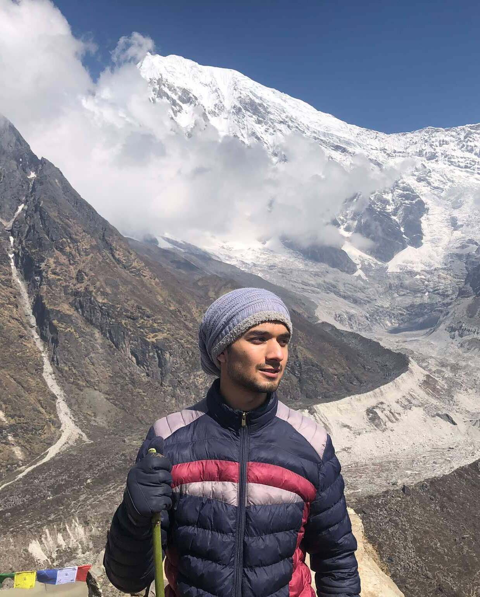

Introduction
 | |
| Based in | Nepal |
|---|---|
| Education | Tribhuvan University, Pulchowk Campus |
| Fields | AI, Data Science, Hardware Design, Networking, Teaching |
| CV | See Curriculum Vitae |
| Hobbies | Trekking, Anime, World History |
| Contact | See Contact Page |
This is a personal wiki written by myself about different parts of my life and work.
I'm a fourth-year computer engineering student at Tribhuvan University, Pulchowk Campus. I work across hardware and software, from Machine learning, Data handling, Networking to FPGAs and CPU designs. I am currently a collaborator at CERN, where I works on anomaly detection for ATLAS Detector Control System for final year major project. I have always had a lot of fun problem solving and I'm always ready to explore emerging technologies and scientific breakthroughs.
Outside of technical work, I find balance by heading into the mountains for trekking, exploring new places, activities and spending quality time with friends. I have a broad curiosity about how the world works. I spend a lot of my free time diving into world history, geopolitics, science, philosophy, and mythology, along with picking up random knowledge across different disciplines. When I want to unwind, I’m usually watching anime, reading manga, catching a good movie, or reading fictional novels. Above all, as incredible and magical as technology is, I’ve come to appreciate that it’s still just a small fraction of the greater magic of life itself.
Background
I was born on January 11, 2004, in Biratnagar, but spent nearly my entire childhood growing up in Kathmandu. From a young age, I was a curious kid, constantly drawn to stories, history, and fiction. I completed my school education at Aksharaa School, where that early curiosity really began to take shape. For high school, I attended Capital College and Research Center (CCRC). Though our time on campus was cut short by the COVID pandemic, I made some incredible friends and memories. Following high school, I joined the Computer Engineering program at Pulchowk Campus, TU. Here I was able to work and make friends with some incredibly smartest people.
Work
On the practical side, I have worked as an AI & Data Science Intern at UBA Solutions, and previously contributed at Ramlaxman Group by helping migrate data for a government application for disabled citizens. I am also an AWS Certified Solutions Architect. I have a strong background in teaching and mentorship, having instructed across my high school, IOE and BSCCSIT entrance preparation institutes, and my college.
Skills
While I work with languages like Python, C, Verilog, SQL, and R, and build using frameworks across data science, machine learning, and web development (TensorFlow, NumPy, Pandas, SciPy, Matplotlib, NEAT, React, Node.js), my fundamental skill isn't tied to a specific syntax. Above all, my greatest strength is adaptability, the ability to rapidly learn the right tool required for the task in hand.